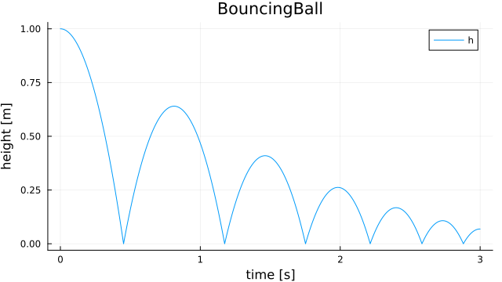
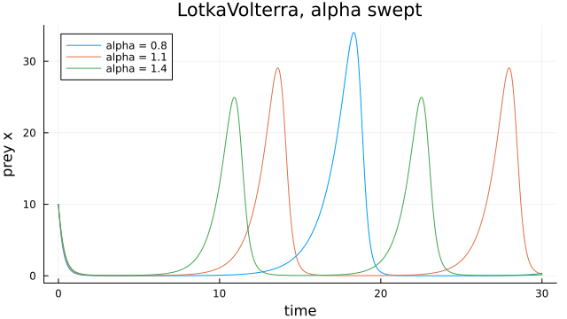
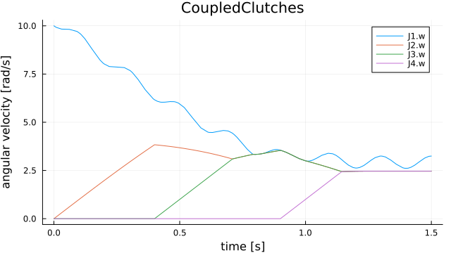
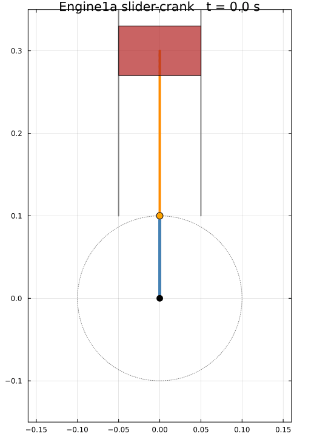
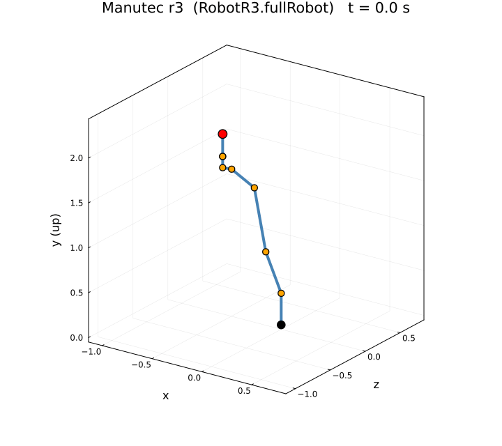

Examples
The examples run in the OM.jl project environment (julia --project in the repository), which also provides Plots and DifferentialEquations.
A simple pendulum
using OM
sol = OM.simulate("Modelica.Mechanics.MultiBody.Examples.Elementary.Pendulum";
MSL_Version = "MSL:3.2.3", stopTime = 1.0)Your own model, with events
Write the model to a file and simulate it by name. when equations become events of the solver; saveat sets the output grid.
model BouncingBall
parameter Real g = 9.81 "Gravity";
parameter Real e = 0.8 "Coefficient of restitution";
Real h(start = 1.0, fixed = true) "Height";
Real v(start = 0.0, fixed = true) "Velocity";
equation
der(h) = v;
der(v) = -g;
when h <= 0.0 then
reinit(v, -e * pre(v));
end when;
end BouncingBall;using OM, Plots
sol = OM.simulate("BouncingBall", "BouncingBall.mo"; stopTime = 3.0, saveat = 0.01)
h = OM.OMBackend.getVariableValues(sol, "h")
plot(sol.t, h; xlabel = "time [s]", ylabel = "height [m]", label = "h")
Each bounce reaches $e^2$ of the previous height (0.64 m after the first). getVariableValues takes Modelica names ("h", "J1.w").
Look at the flat model
print(OM.exportModelica("BouncingBall", "BouncingBall.mo"))OM.flatten returns the frontend's flat model as a data structure instead.
Change parameters without recompiling
Parameters are folded into the generated code as constants unless they are declared tunable when the model is translated. Tunable parameters can then be changed in resimulate, which reuses the compiled model:
model LotkaVolterra
parameter Real alpha = 1.1 "Prey growth";
parameter Real beta = 0.4 "Predation";
parameter Real gamma = 0.4 "Predator death";
parameter Real delta = 0.1 "Predator growth";
Real x(start = 10.0, fixed = true) "Prey";
Real y(start = 10.0, fixed = true) "Predators";
equation
der(x) = alpha * x - beta * x * y;
der(y) = delta * x * y - gamma * y;
end LotkaVolterra;OM.OMBackend.withTunableParameters(["alpha"]) do
OM.translate("LotkaVolterra", "LotkaVolterra.mo")
end
p = plot(; xlabel = "time", ylabel = "prey x")
for alpha in (0.8, 1.1, 1.4)
s = OM.resimulate("LotkaVolterra"; stopTime = 30.0, saveat = 0.05,
parameters = Dict("alpha" => alpha))
plot!(p, s.t, OM.OMBackend.getVariableValues(s, "x"); label = "alpha = $alpha")
end
p
The three runs take about a second together; only the first translation compiles.
Solver and tolerances
simulate and resimulate take any SciML solver; other keyword arguments (reltol, abstol, saveat, dtmax, ...) go to solve. The default is Rodas5P with finite-difference Jacobians.
import DifferentialEquations as DE
sol = OM.simulate("LotkaVolterra"; stopTime = 30.0, solver = DE.Tsit5(),
reltol = 1e-8, abstol = 1e-8)Solve the problem yourself
getMTKProblem builds the problem of a translated model without solving it. Its first two results are the ODEProblem and the model's event callbacks (for BouncingBall, the bounces); pass both to solve:
prob, callbacks = OM.getMTKProblem("LotkaVolterra"; tspan = (0.0, 30.0))
sol = DE.solve(prob, DE.Rodas5P(); callback = callbacks)
longer = DE.solve(DE.remake(prob; tspan = (0.0, 60.0)), DE.Rodas5P(); callback = callbacks)MSL models work the same way after OM.translate(name; MSL_Version = "MSL:3.2.3").
An MSL model with friction events
CoupledClutches drives four inertias through three clutches that slip and lock as they are engaged and released:
name = "Modelica.Mechanics.Rotational.Examples.CoupledClutches"
cc = OM.simulate(name; MSL_Version = "MSL:3.2.3", stopTime = 1.5)
p = plot(; xlabel = "time [s]", ylabel = "angular velocity [rad/s]")
for n in ("J1.w", "J2.w", "J3.w", "J4.w")
plot!(p, cc.t, OM.OMBackend.getVariableValues(cc, n); label = n)
end
p
OM.exportCSV(name, cc; filePath = "CoupledClutches_res.csv") # opens in OMEdit
Scripts
The same models can be run from an OpenModelica .mos script with OM.runScript; see Scripting (.mos).
Showcase: validated multibody systems
OM.jl is also exercised against substantially larger Modelica Standard Library models. These examples cover closed kinematic loops, electric drives, friction, controllers, and hybrid events. They are useful end-to-end demonstrations of the frontend, backend, ModelingToolkit code generation, and SciML simulation pipeline.
These are intentionally demanding models. Their first translation and simulation can take several minutes while Julia compiles the generated system. Repeated runs reuse the compiled model and are much faster.
Closed-loop engine
Engine1a is a crank, connecting-rod, and piston mechanism with a closed kinematic loop. The repository validates its simulated crank trajectory against an OpenModelica reference.

Engine1a rendered from the simulated crankshaft angle.
using OM
engine = OM.simulate(
"Modelica.Mechanics.MultiBody.Examples.Loops.Engine1a";
MSL_Version = "MSL:3.2.3",
stopTime = 0.72,
)
engine.retcode
OM.exportCSV(
"Modelica.Mechanics.MultiBody.Examples.Loops.Engine1a",
engine;
filePath = "Engine1a_res.csv",
)Full six-axis robot
RobotR3.fullRobot combines six controlled axes, electric motors, gear trains, bearing friction, and three-dimensional multibody mechanics. The coverage suite validates 42 result signals against the Dymola MSL 3.2.3 reference.

The Manutec r3 arm rendered from the six simulated joint trajectories.
using OM
robot = OM.simulate(
"Modelica.Mechanics.MultiBody.Examples.Systems.RobotR3.fullRobot";
MSL_Version = "MSL:3.2.3",
stopTime = 1.85,
dense = false,
)
robot.retcode
OM.exportCSV(
"Modelica.Mechanics.MultiBody.Examples.Systems.RobotR3.fullRobot",
robot;
filePath = "RobotR3_fullRobot_res.csv",
)Flatten only (frontend)
(flatModel, functions) = OM.flatten("Modelica.Mechanics.MultiBody.Examples.Elementary.Pendulum")